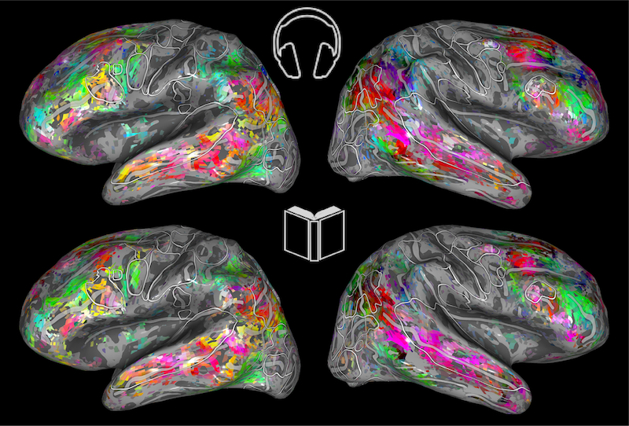
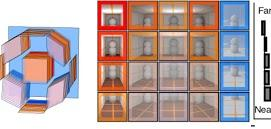
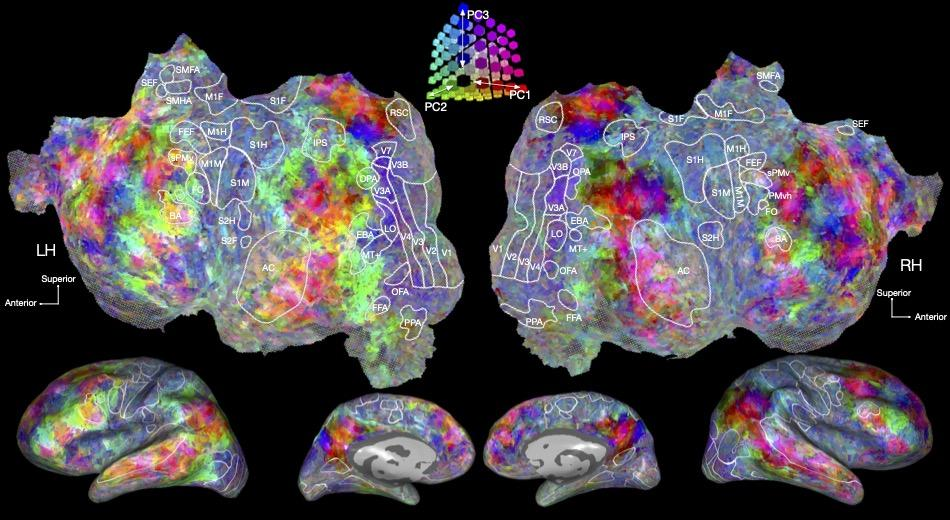
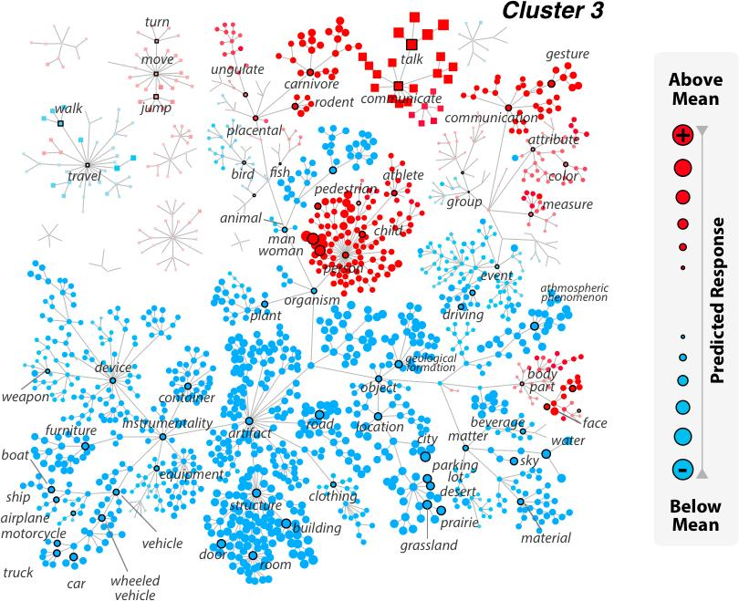
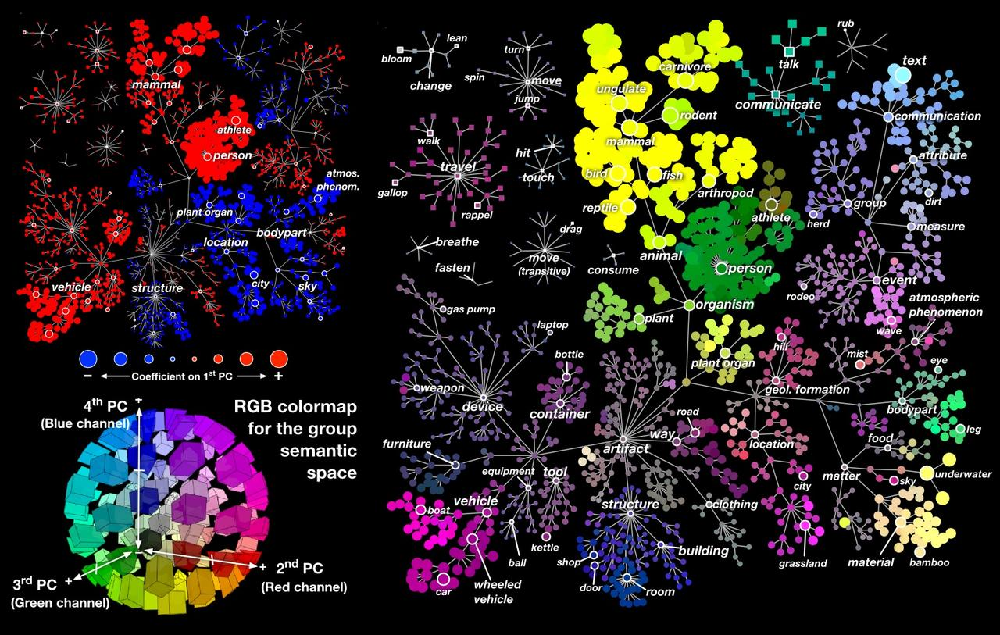

BrainViewers
TEMPORARILY OUT OF SERVICE AS OF 29MAR2023- PLEASE CHECK BACK IN A FEW DAYS
This page collects public brain viewers that you can use to interact with the data and results from many of our published studies. To reach the brain viewer for any topic, just click on the highlighted hyperlink. Please note that these brain viewers do not run well on cell phones, you will have the best experience with a computer or a tablet.
|  | The representation of semantic information across human cerebral cortex during listening versus reading is invariant to stimulus modality (Deniz et al., J. Neuroscience, 2019). In this experiment, people listened to and read stories from the Moth Radio Hour while brain activity was recorded. Voxelwise modeling was used to determine how each individual brain location responded to semantic concepts in the stories during listening and reading, separately. The interactive brain viewer shows how these concepts are mapped across the cortical surface for both modalities (listening and reading). The colors on the cortical map indicate the semantic concepts that will elicit brain activity at that location during listening and reading. |
|  | Human scene-selective areas represent the 3D configuration of surfaces (Lescroart et al., Neuron, 2019). In this experiment people viewed rendered animations depicting objects placed in scenes. The MRI data were analyzed by voxelwise modeling to recover the cortical representation of low-level features and 3D structure. This demo shows how surface position, distance and orientation are mapped across the cortical surface. |
|  | Natural speech reveals the semantic maps that tile human cerebral cortex (Huth et al., Nature, 2016). In this experiment people passively listened to stories from the Moth Radio Hour while brain activity was recorded. Voxelwise modeling was used to determine how each individual brain location responded to 985 distinct semantic concepts in the stories. The demo shows how these concepts are mapped across the cortical surface. The colors on the cortical map show indicate the semantic concepts that will elicit brain activity at that location. The word cloud at right shows words that the model predicts would evoke the largest brain response at the indicated location. Follow the tutorial at upper right to find out more about this tool. |
|  | Attention during natural vision warps semantic representations across the human brain (Cukur et al., Nature Neuroscience, 2013). In this experiment people passively watched movies while monitoring for the presence of either “humans” or “vehicles”, and in a neutral condition. Voxelwise modeling was used to determine how each brain location responded to 985 distinct categories of objects and actions in the movies, and how these responses were modulated by attention. This brain viewer allows you to view data collected under the three different conditions (left click “Passive Viewing”, “Attending to Humans” or “Attending to Vehicles”). By selecting single brain locations (left click on the brain) or single categories (left click on the WordNet tree), you can see how tuning changes under different states of attention. |
|  | A continuous semantic space describes the representation of thousands of object and action categories across the human brain (Huth et al., Neuron, 2012). In this experiment people passively watched movies while brain activity was recorded. Voxelwise modeling was used to determine how each brain location responded to 1785 distinct categories of objects and actions in the movies. The demo shows how these categories are mapped across the cortical surface. On the left is the brain of one person, and on the right is the WordNet tree defining the various categories. The colors painted on the brain indicate the category selectivity of each location, using the colors shown on the tree at right. To move the brain, left click on the brain and move the mouse. To inflate and flatten the brain left click the buttons at bottom, or use the slider. To see which categories activate some specific point in the brain, left click on the brain. This will change the WordNet tree at right so that it shows categories that activate (red) or suppress (blue) activity in that voxel. (To return the WordNet tree to the original colors left click the “Show Semantic Space” button.) To see how some specific category is represented on the cortical surface, left click a category in the WordNet tree. This will change the brain so that it shows locations that are activated (red) or suppressed (blue). |